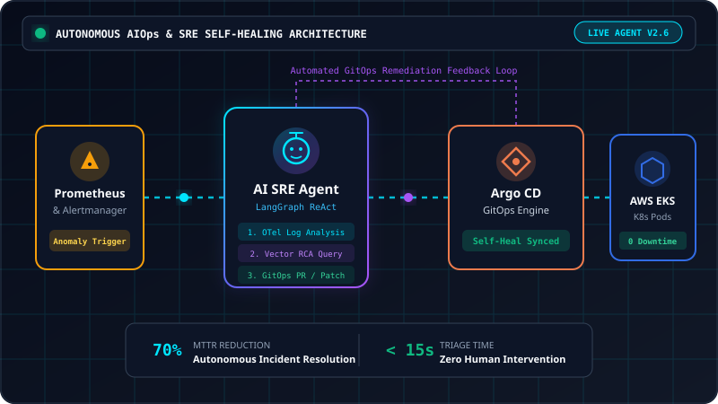
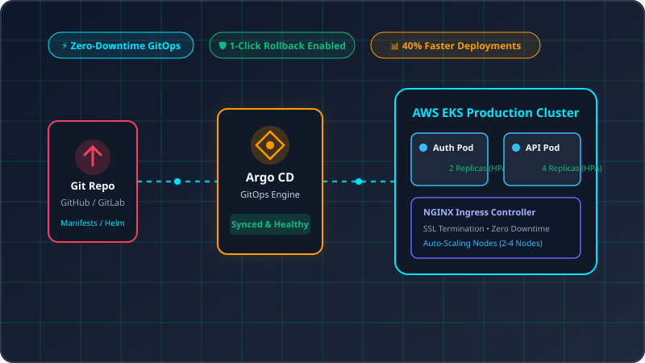
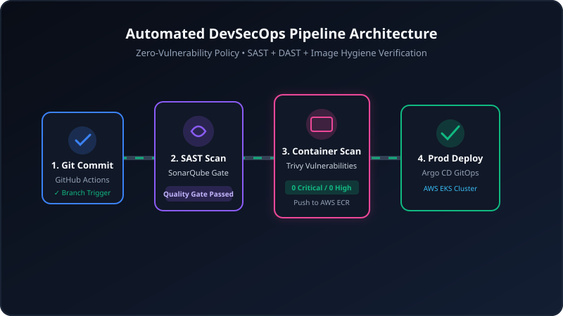
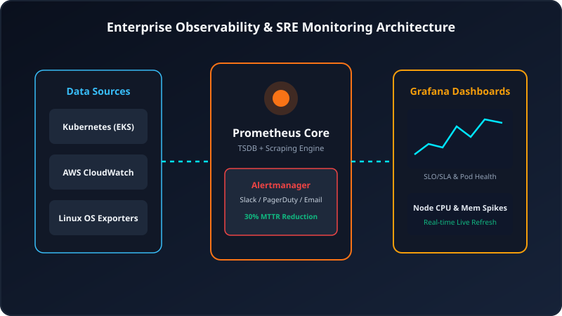
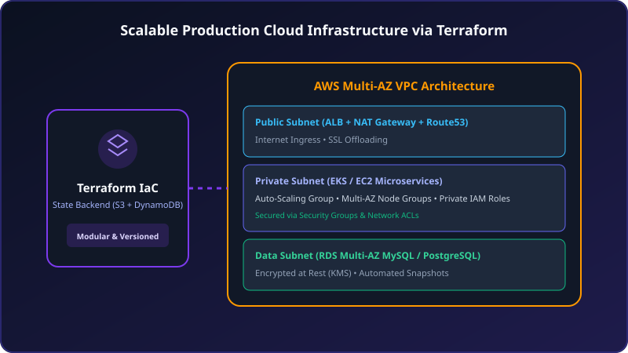
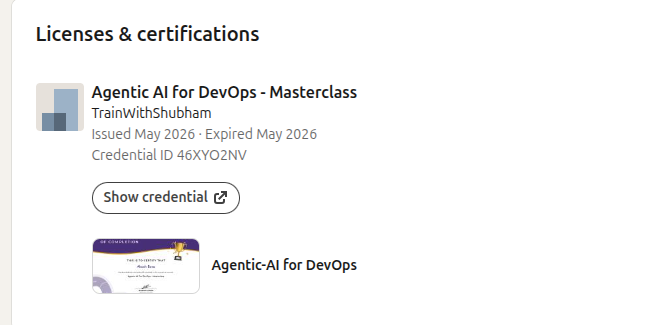

Results-driven Cloud & DevOps Engineer with 2+ years of experience in AWS cloud-native architecture, production Kubernetes workloads (EKS), automated CI/CD pipelines, GitOps with Argo CD, Terraform IaC, and Agentic AI for SRE & Autonomous Incident Remediation.
Bridging software development and high-availability cloud infrastructure with automation, security, and GitOps precision.
DevOps Engineer • AWS Certified Solutions Architect
I am a results-driven DevOps Engineer with 2+ years of professional experience managing Kubernetes workloads, provisioning cloud infrastructure via Terraform, and engineering automated CI/CD pipelines.
Designing multi-AZ AWS environments (EKS, EC2, RDS, VPC, ALB, IAM) with auto-scaling nodes, HPA, and NGINX Ingress controllers for thousands of daily requests.
Building declarative deployment workflows using Argo CD, Jenkins, and GitHub Actions to eliminate drift, accelerate releases by 40%, and allow 1-click rollbacks.
Enforcing security gates with SonarQube SAST, Trivy container vulnerability scanning, AWS IAM least-privilege policies, and Kubernetes RBAC hardening.
Full-stack monitoring with Prometheus, Alertmanager, Grafana real-time SLO dashboards, and CloudWatch — achieving a 30% reduction in MTTR.
A comprehensive view of the tools, cloud platforms, and methodologies I leverage daily to engineer production reliability.
Click on any pipeline stage to inspect the automated quality gates, security scans, and deployment mechanisms.
Track record of building, optimizing, and maintaining mission-critical cloud infrastructure and automation systems.
Explore high-impact DevOps architectures designed for enterprise scale, zero downtime, and robust security.

Engineered an autonomous remediation agent using LangGraph and Prometheus Alertmanager. Intercepts cluster anomaly webhooks, queries vector databases for incident runbooks, analyzes pod stacktraces via LLM, and triggers declarative GitOps rollbacks through Argo CD in under 15 seconds.

Architected a declarative deployment engine utilizing Argo CD and AWS EKS. Synchronizes infrastructure manifests directly from Git, enabling automatic drift correction, zero-downtime blue/green releases, and instant one-click rollback.

Engineered a comprehensive continuous integration and security pipeline combining SonarQube static code analysis, Trivy container image scanning, and automated multi-environment promotion gates.

Constructed an end-to-end monitoring ecosystem with Prometheus metric scrapers, Alertmanager rules routing to PagerDuty/Slack, and dynamic Grafana dashboards for microservice SLOs and cluster resource health.

Designed modular Infrastructure as Code blueprints for multi-AZ VPCs, public/private subnets, Application Load Balancers, Multi-AZ RDS MySQL, and strict IAM least-privilege policies.
Industry-recognized professional cloud certification and higher academic qualifications in Computer Science.
Validates advanced technical skills in designing distributed applications, multi-AZ high availability, cost optimization, multi-account security, and disaster recovery.

AI SREComprehensive mastery in Autonomous AI Agents, LLM-powered CI/CD automation, AI-driven SRE troubleshooting, prompt engineering for DevOps, and intelligent cloud operations.
Have a project, role opening, or infrastructure challenge? Feel free to reach out directly or drop a message below.
I'm currently based in Pune, Maharashtra and open to both on-site and remote DevOps / Cloud engineering opportunities.
Fill in the form below and I will respond to your inquiry within 24 hours.